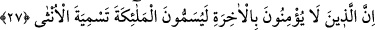

“Göklerde nice melek var ki onların şefâati hiç bir işe yaramaz.” Bu cümle
müşriklerin putlardan şefâat beklentilerindeki ümidlerini kırmak üzere, meleklerin dahi
putlardan daha çok şefâat etmeye lâyık olduğu halde onların şefâat edemeyeceğini beyân
ile heveslerini kursaklarında bırakmaya yarayan bir ümid kestirme ifâdesidir.
Mânâ: “Nice melekler vardır ki onların Allah katındaki şefâatleri hiç bir zaman bir
işe yaramaz. Yâni az bir fayda bile sağlamaz veya bir kişiye bile faydası olmaz,
takdirindedir. Buradaki mânâ, meleklerin şefâat edip de şefâatlerinin yarar sağlamaması
değildir. Bilakis onların şefâat hakkının bulunmaması, bu iznin kendilerine
verilmemesidir. Nitekim “Meğer Allah’ın” kendilerine şefâat edilmesini “dilediği ve
şefâat edilmeye lâyık olarak gördüğü tevhîd ve îman ehli olan şefâata müstahak
kimselerden “razı olduğu kimseye” şefâat etmeleri için meleklere izin verdikten
sonra olsun (ancak o zaman şefâatin faydası olur)” cümleleri buna işâret etmektedir.
Tevhîd ve îman ehlinden şefâatlerine izin verilenlerin dışındaki küfür ve tuğyan ehli,
Allah’ın şefâat izninin çok uzağındadırlar, onlara asla şefâat edilmez. Meleklerin şefâat
etmeleri husûsundaki durumları şâyet böyle ise, o halde müşrikler, putların şefâatleri
hakkında nasıl bir kanâata sâhiptirler?
Bu âyette ruh meleğinin kötülüğü emreden nefs-i emmâreye; kötü vasıflarından
sıyrılması ve fenâ-bakâ makamına terakki etmesi ümidiyle şefâat etmesi söz konusudur.
Ancak ruh meleğinin nefs-i emmâreye şefâat etmesi, Allah’ın ezelî ilmindeki takdîri
dolayısıyla bulunduğu bu makamından yükselmeye kabiliyetli olmaması sebebiyle fayda
vermeyecek bir şefâattir.
Allahım! Nefsi ince bir hicabla örtülü bulunan ilk fıtratındaki sâfiyet nedeniyle ilahî
feyzi almaya müsâid olan ve tabîatına muvafakat etmekten ve şerîata muhâlefetten
uzaklaşmak sûretiyle şerîatın muvâfakatına ve tabîatın muhâlefetine yönelmiş bulunup
ulvî makamlarda terakkî etme gibi bakâ kabiliyetinde olanlar hakkında bu şefâati kabûl
eyle!...
27. Âhirete inanmayanlar, meleklere dişilerin adlarını takıyorlar.
“Âhirete” ve (dünyada iken) yarışıp durdukları küfür ve isyanların cezâsı olan
şeylere “inanmayanlar” mutlak surette noksan isimlerden münezzeh olan “meleklere”
hepsi ayrı ayrı “dişilerin adlarını takıyorlar.” Müşriklerin, “Melekler Allah’ın
kızlarıdır“ sözleriyle murâd ettikleri ifâde, meleklerin her birinin Hakk Sübhânehû’nun
kızı oluşudur ki bu söz meleğe dişi adının takılması anlamına gelmektedir. Meleklerle
ilgili sözlerinin; müşriklerin âhirete îman etmemesiyle bağlantılı olarak getirilmesindeki
gaye, onların bu sözlerinin çok çirkin ve kötü olduğunu beyân ederek daha baştan bu
sözlere; ancak âhirete inanmayanların cüret edeceklerinin belirtilmesiyle âhirette